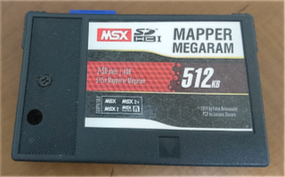

SD MapperMegaram512KB (BEEP-shop販売版) の使い方に関する備忘録
■はじめに
BEEP-shopで売られていた SD MapperMegaram512KB は、（私が購入したものは）カートリッジが１つ入っていたのみで
説明書の類いは紙ペラ一枚も入っていませんでした。
いろいろ調べて、それなりに使えるレベルになったので、忘れないようにするための備忘録です。
また、もしかしたら使い方が分からなくて放置している方の手助けになるかもしれないので、公開しておきます。
※私自身は、BEEP-shopや、このカートリッジ作成者とは無関係ですので、ここに記載の内容を BEEP-shop等に問い合わせるのはおやめください。
※また、ここに記載の内容がすべての同カートリッジに適用できる保証は出来ません。
■動作環境

私のところでは、下記で動作することを確認しています。
Panasonic FS-A1GT (MSXturboR)
Casio MX-101 (MSX1)
DE0CV + DEOCM に OCM改 を書き込んだもの (MSX1互換, MSX2互換, MSX2+互換)
MSX1で RAM16KB の MX-101 と、I/O信号レベルが 3.3V の DEOCM でも動作するので、おそらく MSX実機なら大抵動作するのでは無いかと思います。
カートリッジ内部で4スロットに拡張しているので、基本スロットに装着する必要があります。
■SDカードの準備
カートリッジ上部には SDカードスロットが２つ付いています。
ここには、SDカードまたはSDHCカードを装着して利用します。
SDカードアダプタに装着した microSD/miniSD でも構いません。
２枚無ければ 1枚でも構いません。
SDXCカードは使えないと思います(未確認)。
SD1 が A:, SD2 が B: になります。
FAT12フォーマットか FAT16フォーマットにしか対応していません。FAT32やExFATでフォーマットされている場合は、FAT12/FAT16 でフォーマット
し直す必要があります。FAT12は最大32MBしか扱えませんので、よく分からなければ FAT16 でフォーマットしてください。
SDカードをフォーマットする場合は、WindowsPCからフォーマットする場合、OS標準のフォーマット機能ではなく、Panasonicが提供している
SDカードフォーマッタを使う方がいいです。
[外部へリンク] Panasonic SDカードフォーマッタ
FAT16は、クラスタサイズなどいくつか選べる構造になっていますが、MSX側が対応できるクラスタサイズが限定されていたりするので
割と自由にクラスタサイズを決めてしまう Windows標準のフォーマット機能は避けた方が良いです。
FAT16は最大4GBしか扱えませんので、4GBを越える SDHCカードの場合は、パーティションを分ける必要があります。
パーティション分けは、MSXでやる方が簡単です。
SD1スロットに、パーティション分けしたいSDHCカードを挿入して、MSX-BASICから CALL FDISK とタイプして [RETURN] を押してください。
これでパーティション分けできます(未確認)。
■MSX-DOS2互換 NEXTOR-DOS
このカートリッジには、MSX-DOS2互換の NEXTOR-DOS が書き込まれています。
また、動作に必要な 512KB のメモリマッパー対応メモリも搭載しています。
メモリマッパーの管理も NEXTOR がやりますので、MSX1 である MX-101 でも問題なく使えます。
MSX-DOS2互換なので、当然ディレクトリを扱うことも出来ます。
NEXTORは、下記の場所で公開されているフリーソフトです。
[外部へリンク] Konamiman's MSX page
[次へ]